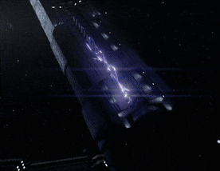

Common weapons on a spacecraft are its missiles and point defense cannons, with larger spacecraft also armed with a railgun. Missiles are long-range, guided missile delivery systems that can be fitted with conventional explosives, plasma incendiaries (which melt armor and damage systems), or varying-yield nuclear warheads. They are jettisoned from the launcher, align themselves with the target, and then begin accelerating to high speed. They can accelerate far faster than a ship, are impossible to dodge, and cause devastating damage to a ship on contact, often wiping out smaller ships with a single hit.
Missiles are long-range, guided missile delivery systems that can be fitted with conventional explosives, plasma incendiaries (which melt armor and damage systems), or varying-yield nuclear warheads. They are jettisoned from the launcher, align themselves with the target, and then begin accelerating to high speed. They can accelerate far faster than a ship, are impossible to dodge, and cause devastating damage to a ship on contact, often wiping out smaller ships with a single hit.
They are also referred to as "torpedoes" when used in ship-to-ship combat, or "nukes" when equipped with a nuclear warhead. Their ability to maneuver grants them a much higher effective range than railguns. However, missiles do have a minimum range, so they are usually launched first in an engagement. Missiles are also vulnerable to point defense cannons (PDCs), which can intercept them before closing to effective range. This is countered by firing them in numbers to overwhelm the PDCs on an enemy ship. A point defense cannon (PDC) is a rapid-fire projectile weapon used by all military-grade spaceships for defense against missiles and ships. PDCs are turreted rotary autocannons, utilizing a set of more, or less than, six spinning barrels to spew out thousands of rounds per minute to intercept incoming ordnance. PDCs are laid out on a ship's hull to cover all angles with overlapping fields of fire, providing a "curtain of steel" to more easily and effectively take out missiles. They also utilize thrusters on their rear to counteract the recoil of the firing cannon that would otherwise knock the ship off course. Some turrets can also be retracted into the hull and can extend outwards in mere seconds.
A point defense cannon (PDC) is a rapid-fire projectile weapon used by all military-grade spaceships for defense against missiles and ships. PDCs are turreted rotary autocannons, utilizing a set of more, or less than, six spinning barrels to spew out thousands of rounds per minute to intercept incoming ordnance. PDCs are laid out on a ship's hull to cover all angles with overlapping fields of fire, providing a "curtain of steel" to more easily and effectively take out missiles. They also utilize thrusters on their rear to counteract the recoil of the firing cannon that would otherwise knock the ship off course. Some turrets can also be retracted into the hull and can extend outwards in mere seconds.
Railguns are large, powerful mass drivers, cannons that use electroconductive rails and the Lorentz Effect to accelerate a dense metal slug at very high speeds, relying on mass and sheer speed to punch clean through ships rather than warheads like with torpedoes. These weapons require significant power (presumably supplied by a fusion power-plant) to fire and must charge briefly before firing. They range from light, fast firing railguns with small calibers (presumably around 40 millimeters) to ultra-heavy types, firing heavier slugs on a lower rate of fire.